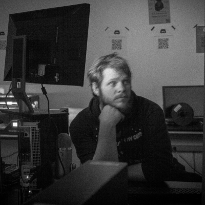

Andrew Jordan's Resume


Overview
Programmer, computing enthusiest and human generalist. Recently launched the The Physical Computing Center at Evergreen. Currently employed as a Senior Systems Operator in the Academic Computing Center.I also have skills in:
Technical Training & Instruction
Client Management
Python
Network and Systems Security
Audio/Video/Event Production
Personal Goals
Do cool things, support my family, and learn something new everyday. Natural leader. It is people who inspire me the most.My favorite team is one I enjoy gaining new insights from.[1]. Currently, I am looking for opportunites to work on amazing products. If you make cool things, hit me up :)Skills
Languages / Markuppython, bash, powershell, c/c++, X86, java, javascript and spanish
Software
Resolume, MadMapper, Ofx, JetBrains, Unity, git, github, Photoshop, Excel, Word, openscad, arduino ide, vim/emacs/nano/gedit/sublime/notepad/whatever, Draw.io, FinalCutProX, One Shot, PremierPro, Slides/Powerpoint, AfterEffects, Wireshark, GQRX, Radare2, GDB, nmap, Linux/OSX/Windows, Gimp, Basecamp, Trello, Redmine, Agile etc.
Hardware
Vive, Raspberry Pi, Arduinos, Adafruit Devboards, 3D Printers,Soldering, I like to build desktops and led displays with DMX and ArtNet.
Other
I play trumpet and other insturments. I like playing CTFs and toying around with Resolume. Voluenteer with CIELO Teaching computer skills to english learners/Ofx.
Work History
December 2017 - PresentSenior Systems Operator - Evergreen State College
May - December 2018
Computer Science Internship - PCC (Cyber Security/Makerlabs)
2010 - 2017
I was an intern for The Stranger. Did web video for A Skincare Company Wrote content, did photogrpahy, and helped produce live events at Punch-Drunk in Seattle.